Virtualization and Encapsulation (Ảo hóa và Đóng gói)
Hạn chế của Datacenter vật lý
Các Datacenters (trung tâm dữ liệu) được tổ chức một cách cố định và có cấu trúc. Các servers (máy chủ) giống hệt nhau được tổ chức thành các racks (giá đỡ), và các racks được sắp xếp theo một topology (topo) cố định nào đó. Cách tiếp cận này có một số lợi ích. Ví dụ, nó cho chúng ta một cách tự nhiên để gán hierarchical addresses (địa chỉ phân cấp).
Tuy nhiên, khi chúng ta xem xét cách các ứng dụng được lưu trữ trên datacenters, việc tổ chức cố định của datacenters có một số nhược điểm. Giả sử Google giới thiệu một dịch vụ mới mà họ muốn lưu trữ trong một datacenter hiện có. Nếu chúng ta đặt ứng dụng đó trực tiếp lên một physical server (máy chủ vật lý), ai đó sẽ phải cài đặt vật lý một server mới, với IP address (địa chỉ IP) riêng, cho ứng dụng này. Nếu dịch vụ mở rộng, có thể cần phải cài đặt thêm nhiều servers hơn. Nếu server bị hỏng, chúng ta sẽ phải đợi ai đó sửa chữa nó. Vấn đề chính ở đây là việc thay đổi cơ sở hạ tầng vật lý rất khó khăn, nhưng chúng ta thường muốn thêm các hosts (máy chủ) mới, mở rộng quy mô các hosts hiện có, và di chuyển hosts một cách nhanh chóng và thường xuyên.
Việc đặt các ứng dụng trên các physical servers cũng gây ra các vấn đề về khả năng mở rộng. Giả sử dịch vụ mới của Google rất nhẹ, nhưng cần một server chuyên dụng (ví dụ: vì lý do bảo mật). Chúng ta sẽ phải gán toàn bộ một physical server cho dịch vụ nhẹ này, và hầu hết năng lực tính toán của server sẽ không được sử dụng.
Cách tiếp cận này cũng có các vấn đề về định tuyến. Giả sử chúng ta muốn di chuyển dịch vụ đến một phần khác của tòa nhà datacenter (ví dụ: vì một phần của tòa nhà đang được bảo trì). Đầu tiên, ai đó sẽ phải di chuyển vật lý server trong tòa nhà. Ngoài ra, trong mô hình hierarchical address của chúng ta, chúng ta sẽ cần gán cho dịch vụ này một IP address mới tương ứng với vị trí vật lý mới của nó. Lý tưởng nhất, ứng dụng sẽ muốn giữ nguyên địa chỉ, bất kể vị trí của nó trong datacenter.
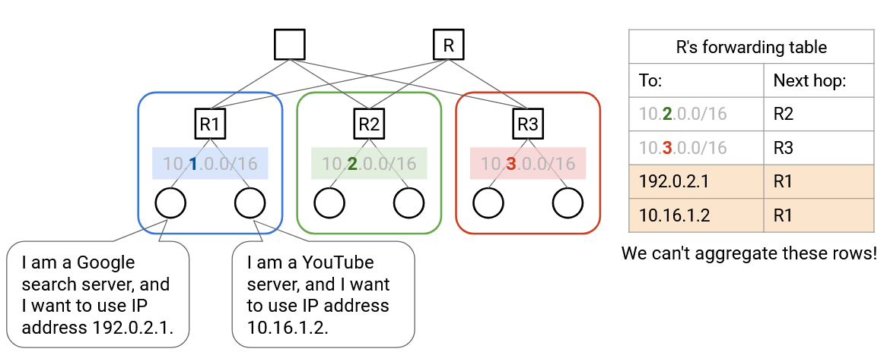Virtualization (Ảo hóa)
Chúng ta có thể sử dụng virtualization để giải quyết những vấn đề này và mang lại cho các ứng dụng sự linh hoạt hơn, trong khi vẫn duy trì cấu trúc vật lý cứng nhắc của datacenter. Virtualization cho phép chúng ta chạy một hoặc nhiều virtual servers (máy chủ ảo) bên trong một physical server.
Virtual server mang lại cho các ứng dụng ảo giác rằng chúng đang chạy trên một máy vật lý chuyên dụng. Tuy nhiên, trên thực tế, nhiều virtual servers có thể đang chạy trên cùng một máy. Khi ứng dụng cố gắng tương tác với phần cứng (ví dụ: đĩa, network card (card mạng)), nó thực sự đang tương tác với một hypervisor (trình quản lý máy ảo) trong phần mềm. Hypervisor cung cấp cho mỗi ứng dụng ảo cùng một giao diện mà phần cứng thực sự sẽ có. Bản thân hypervisor chạy trên phần cứng vật lý thực tế, và có thể chuyển tiếp các yêu cầu của ứng dụng (ví dụ: ghi đĩa, gửi gói tin mạng) đến cấp độ phần cứng.
Với virtualization, nếu chúng ta có một ứng dụng mới, chúng ta có thể yêu cầu một hypervisor khởi động một virtual machine (máy ảo) mới cho ứng dụng này. Hypervisor chạy trong phần mềm, vì vậy không cần phải cài đặt bất kỳ server mới nào trong datacenter vật lý. Tương tự, chúng ta có thể di chuyển hosts đến một máy vật lý khác, hoàn toàn bằng phần mềm.
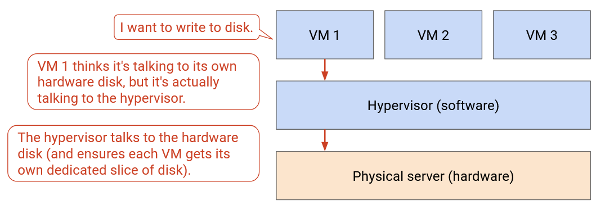Virtualization cho phép nhiều ứng dụng chia sẻ một physical server. Các ứng dụng có thể được tách biệt với nhau, và có thể được quản lý bởi những người khác nhau. Điều này cho phép chúng ta sử dụng các tài nguyên tính toán trong datacenter hiệu quả hơn. Điều này cũng cho phép chúng ta có nhiều hosts hơn trong datacenter. Ví dụ, một rack duy nhất với 40 servers có thể có nhiều hơn 40 end hosts (máy chủ đầu cuối).
Virtual Switches (Bộ chuyển mạch ảo)
Physical server có một network card và một IP address duy nhất, nhưng chúng ta cần mang lại cho mỗi virtual machine ảo giác rằng nó có network card và địa chỉ chuyên dụng của riêng mình. Ngoài ra, các switches (bộ chuyển mạch) giờ đây có thể có nhiều virtual machines kết nối với một port (cổng) vật lý duy nhất.
Để quản lý nhiều kết nối mạng trên cùng một máy vật lý, server cần một virtual switch. Virtual switch này chạy trong phần mềm trên server (nó không phải là một router vật lý), và thực hiện các hoạt động tương tự như một switch thực sự (ví dụ: chuyển tiếp gói tin). Mỗi virtual machine được kết nối với virtual switch, và virtual switch được kết nối với phần còn lại của mạng.
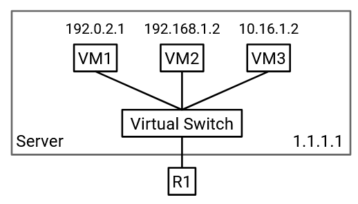Lưu ý: Các switches thường chạy trên phần cứng chuyên dụng để tối đa hóa hiệu quả. Các virtual switches có thể chạy trong phần mềm trên một CPU (đơn vị xử lý trung tâm) đa dụng vì chúng chỉ cần hỗ trợ một vài virtual machines (dung lượng thấp hơn so với những gì các switches thường xử lý).
Underlay and Overlay Network (Mạng lớp nền và Mạng lớp phủ)
Với virtualization, chúng ta giờ đây có các virtual hosts (máy chủ ảo) chạy trên các physical servers. Không giống như physical servers, virtual hosts có thể được tạo, tắt và thay đổi nhanh chóng.
Các virtual machines không nhất thiết phải sử dụng cùng một sơ đồ địa chỉ như các physical servers. Các IP addresses của physical server được xác định bởi topo datacenter vật lý (ví dụ: pods, racks). Ngược lại, các IP addresses của virtual machine thường được xác định bởi một hệ thống phân cấp thực tế nào đó (ví dụ: quốc gia, tổ chức). Đặc biệt, các virtual hosts trên một physical server duy nhất không nhất thiết phải có cùng IP prefixes (tiền tố IP), vì vậy chúng ta không thể sử dụng các thủ thuật tổng hợp tương tự để mở rộng quy mô.
Nếu chúng ta cố gắng mở rộng một cách ngây thơ các sơ đồ định tuyến của mình để hỗ trợ các virtual machines, các forwarding tables (bảng chuyển tiếp) của chúng ta sẽ trở nên rất lớn, rất nhanh. Trước đây, chúng ta có thể tổng hợp bằng cách nói: "tất cả các servers trong pod màu xanh có cùng IP prefix, và tất cả chúng đều có next hop (chặng kế tiếp) là R2." Bây giờ, các servers trong pod màu xanh đó có thể chứa hàng trăm virtual hosts, tất cả đều có các IP addresses khác nhau (không có tiền tố chung). Chúng ta sẽ cần một mục chuyển tiếp riêng cho mỗi virtual host. Ngoài ra, nếu một virtual host di chuyển đến một máy vật lý khác (giữ nguyên IP address), giao thức định tuyến sẽ phải khám phá lại các đường đi đến virtual host này. Liệu chúng ta có thể tìm ra cách để tránh việc mở rộng datacenter để hỗ trợ mọi địa chỉ VM không?
Vấn đề chính ở đây là chúng ta hiện có hai hệ thống địa chỉ khác nhau, một cho virtual hosts, và một cho physical hosts. Cả hai sơ đồ địa chỉ đều hoạt động ở IP layer (lớp IP), nhưng trong IP layer, hiện có hai lớp con trừu tượng mà chúng ta cần phải suy nghĩ đến.
Underlay network (mạng lớp nền) xử lý việc định tuyến giữa các máy vật lý. Underlay network chứa cơ sở hạ tầng datacenter như top-of-rack switches (bộ chuyển mạch đỉnh giá) và spine switches (bộ chuyển mạch trục). Underlay network có khả năng mở rộng tốt vì chúng ta xác định các hierarchical addresses sử dụng topo datacenter vật lý.
Overlay network (mạng lớp phủ) tồn tại trên topo vật lý (underlay), và nó chỉ suy nghĩ về việc định tuyến giữa các virtual machines. Trên thực tế, mỗi virtual machine thường chỉ cần giao tiếp với một vài virtual machines khác trong mạng. Do đó, overlay network có khả năng mở rộng tốt vì một virtual machine không cần phải biết về mọi virtual machine khác.
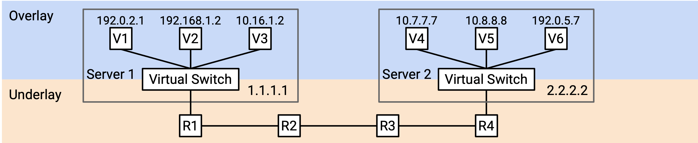Lý tưởng nhất, chúng ta muốn hai lớp này suy nghĩ về việc đánh địa chỉ một cách riêng biệt. Underlay network không cần phải biết về các địa chỉ virtual host (nếu không, nó sẽ mở rộng kém). Tương tự, overlay network không cần phải biết về mọi physical server trong datacenter (mỗi VM chỉ cần biết về một vài VMs khác).
Nếu chúng ta không cho underlay network biết về các địa chỉ virtual host, thì nếu một datacenter switch nhận được một packet (gói tin) với một IP ảo làm đích, nó sẽ tìm trong forwarding table của mình, không tìm thấy IP ảo nào, và loại bỏ packet này. Chúng ta cần một cách nào đó để kết nối khoảng cách giữa overlay (suy nghĩ theo hướng ảo) và underlay (suy nghĩ theo hướng vật lý).
Encapsulation (Đóng gói)
Để hợp nhất các lớp overlay và underlay, chúng ta có thể sử dụng các chiến lược tương tự với phân lớp và các headers (tiêu đề) mà chúng ta đã sử dụng khi thiết kế Internet!
Cho đến nay, chúng ta đã coi IP là một lớp duy nhất, và mỗi packet có một IP header duy nhất, hiểu hệ thống địa chỉ IP.
Bây giờ chúng ta có hai lớp con IP với hai hệ thống địa chỉ IP khác nhau, chúng ta có thể giới thiệu một header bổ sung vào packet. Ví dụ, chúng ta có thể có hai IP headers, trong đó một header hiểu overlay network, và header kia hiểu underlay network. Hoặc, chúng ta có thể sử dụng IP header ban đầu cho underlay network, và giới thiệu một loại header mới (khác với IP) cho overlay network.
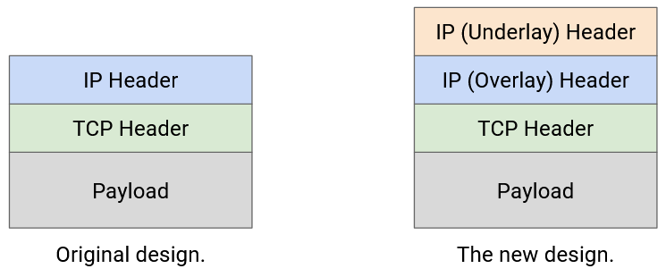Bây giờ, chiến lược của chúng ta để định tuyến các packets có thể kết hợp overlay và underlay networks. Giả sử VM A muốn gửi một packet đến VM B.
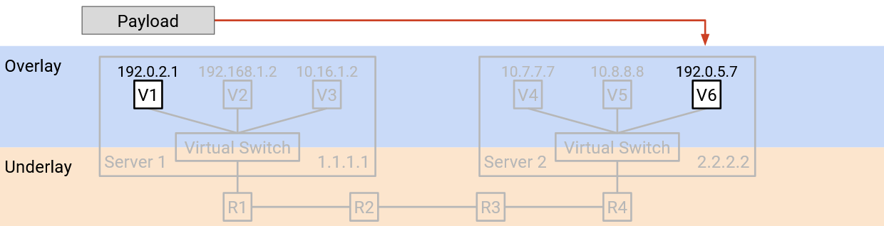-
VM A tạo một packet với một IP header duy nhất, chứa địa chỉ IP ảo của B. (Hãy nhớ rằng, A đang suy nghĩ theo thuật ngữ của overlay, và không biết về các địa chỉ IP vật lý của underlay.) VM A chuyển tiếp packet này đến virtual switch (trên physical server của A).
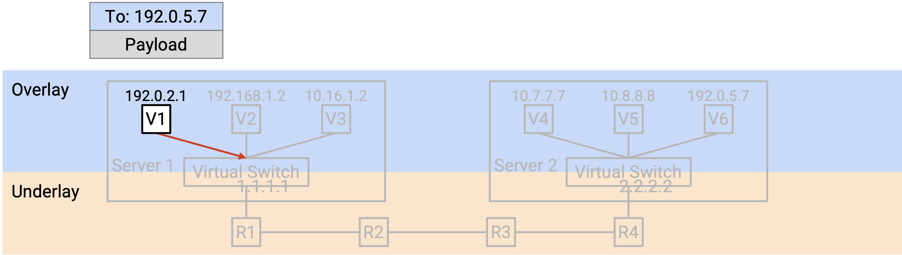 -
Virtual switch đọc header để biết địa chỉ IP ảo của B. Sau đó, virtual switch tra cứu địa chỉ physical server tương ứng với địa chỉ IP ảo của B. (Chúng ta chưa mô tả cách thực hiện điều này.)
Virtual switch thêm một outer header (tiêu đề bên ngoài) bổ sung chứa địa chỉ physical server của B. Việc thêm header đôi khi được gọi là encapsulation.
Tại thời điểm này, packet có hai headers. Inner header (tiêu đề bên trong) (lớp cao hơn, overlay, được thêm bởi VM A) chứa địa chỉ IP ảo của B, và outer header (lớp thấp hơn, underlay, được thêm bởi virtual switch) chứa địa chỉ physical server của B.
Virtual switch chuyển tiếp packet này đến switch next hop, dựa trên địa chỉ physical server.
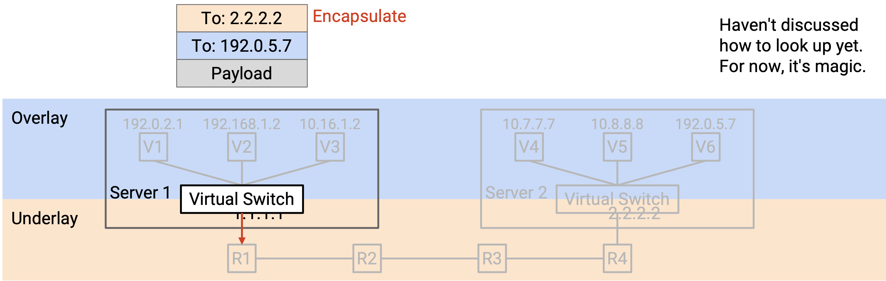 -
Packet được gửi qua underlay network. Mỗi switch trong datacenter chỉ nhìn vào outer header (lớp nền, địa chỉ physical server) để quyết định cách chuyển tiếp packet. (Hãy nhớ rằng, các datacenter switches suy nghĩ theo thuật ngữ của underlay, và không biết về địa chỉ IP ảo của overlay.)
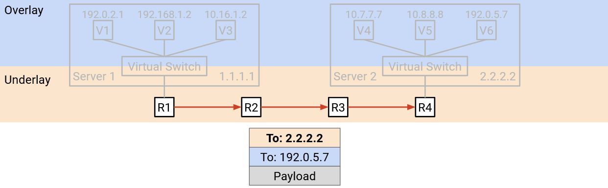 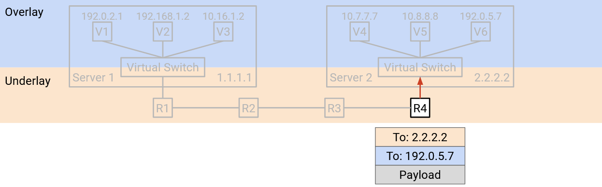 -
Cuối cùng, packet đến virtual switch của physical server đích. Virtual switch nhìn vào outer header (underlay) và nhận thấy rằng địa chỉ physical server đích là chính nó.
Virtual switch loại bỏ outer header, để lộ inner header bên trong. Việc loại bỏ outer header đôi khi được gọi là decapsulation (giải đóng gói).

Cuối cùng, virtual switch đọc inner header (overlay). Điều này cho virtual switch biết packet nên được chuyển tiếp đến VM nào trên physical server.
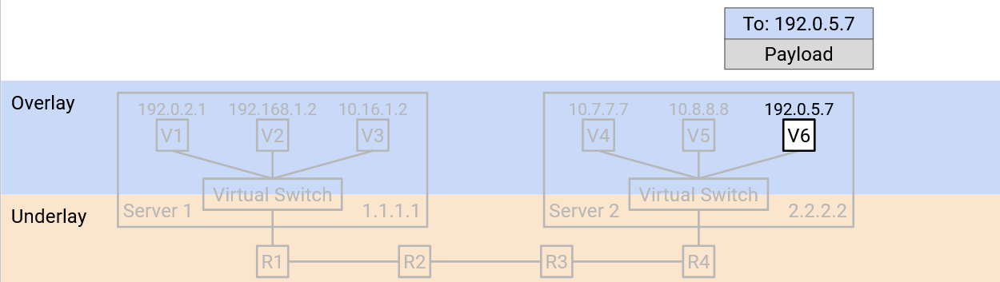Trong quá trình này, encapsulation cho phép chúng ta suy nghĩ về việc định tuyến ở hai lớp khác nhau. Underlay có thể định tuyến các packets bằng cách sử dụng địa chỉ physical server, mà không cần suy nghĩ về overlay. Tương tự, VM trong overlay có thể gửi và nhận các packets mà không cần suy nghĩ về cách chuyển tiếp các packets trong underlay. Các virtual switches đã kết nối hai lớp bằng cách dịch địa chỉ virtual machine thành địa chỉ physical server, và thêm và bớt header underlay bổ sung.


Forwarding Tables với Encapsulation
Chúng ta nên cài đặt những mục nào trong các forwarding tables để hỗ trợ định tuyến với encapsulation?
Các virtual machines nên cài đặt một default route (tuyến đường mặc định) để chuyển tiếp mọi packet đến virtual switch trên máy vật lý.
Các virtual switches cần triển khai thêm một số chức năng để kết nối hai lớp. Cụ thể, khi bạn thấy một địa chỉ ảo, bạn nên áp dụng encapsulation (thêm một lớp ngoài) với địa chỉ vật lý tương ứng. Forwarding table có các mục cho mọi VM đích mà bất kỳ VM nào trên server này có thể muốn nói chuyện. Chúng ta có thể hỗ trợ quy mô này vì chúng ta giả định các VMs sẽ không cần nói chuyện với mọi VM khác trong datacenter. Không giống như các thuật toán định tuyến tiêu chuẩn, chúng ta không cần định tuyến any-to-any (chúng ta không cần đường đi đến mọi VM khác).
Các virtual switches cũng cần một quy tắc bổ sung để decapsulating các packets. Nếu đích của packet ngoài (underlay) là chính switch đó, bạn nên decapsulate (loại bỏ outer header) và chuyển packet đến địa chỉ VM trong inner header. Quy tắc này mở rộng theo số lượng VMs trên server, thường đủ nhỏ để có thể quản lý được.
Việc thêm chức năng này có khó không? May mắn thay, các virtual switches được triển khai trong phần mềm, vì vậy việc thêm chức năng này chỉ cần viết mã lệnh (không cần thêm phần cứng). Tuy nhiên, trên thực tế, encapsulation phổ biến đến mức đôi khi nó vẫn được triển khai trong phần cứng.
Các switches trong datacenter hoạt động giống hệt như trước khi chúng ta giới thiệu virtualization. Các forwarding tables chỉ chứa địa chỉ physical server, và chúng ta biết rằng chúng có thể được mở rộng quy mô bằng các thủ thuật tổng hợp dựa trên topo vật lý.
Multi-Tenancy (Đa người thuê) và Private Networks (Mạng riêng)
Các Datacenters được quản lý bởi một nhà khai thác duy nhất, nhưng các tổ chức khác nhau có thể đang chạy các ứng dụng bên trong datacenter đó. Ví dụ, một datacenter do Google điều hành có thể có một số virtual servers do Gmail chạy, và những servers khác do Google Maps chạy. Cách tiếp cận lưu trữ nhiều dịch vụ trong một datacenter này được gọi là multi-tenancy.
Các Cloud providers (nhà cung cấp đám mây) cũng sử dụng các datacenters để cung cấp virtual machines cho khách hàng. Ví dụ, Amazon Web Services (AWS) và Google Cloud Platform (GCP) cho phép người dùng khởi động một virtual machine trong một datacenter, làm bất cứ điều gì họ muốn, và phá hủy virtual machine khi họ hoàn thành.
Một vấn đề với multi-tenancy là, chúng ta không phải lúc nào cũng muốn các tenants (người thuê) khác nhau có thể giao tiếp với nhau. Ví dụ, nếu một khách hàng yêu cầu một VM, họ có lẽ không nên có thể kết nối với mọi VM khác trong datacenter.
Một vấn đề khác là, các tenants trong một datacenter không phối hợp với nhau khi chọn địa chỉ. Ví dụ, giả sử datacenter của chúng ta có hai tenants, Pepsi và Coke. Mỗi tenant tạo ra private network của riêng mình, nơi họ gán các IP addresses nội bộ cho các virtual machines. Private network chỉ dành cho các hosts bên trong datacenter giao tiếp với nhau, và các hosts này sẽ không bao giờ được liên lạc từ Internet công cộng. Vì các mạng là riêng tư, hai tenants đều có thể sử dụng các địa chỉ trong cùng một dải địa chỉ riêng được phân bổ đặc biệt (RFC 1918 addresses - các dải địa chỉ dành riêng cho mạng nội bộ). Private network của Pepsi có thể có một VM với IP address 192.0.2.2, và private network của Coke có thể có một VM khác với IP address 192.0.2.2. (Trên thực tế, chúng ta sử dụng các dải địa chỉ riêng để tái sử dụng các IPv4 addresses (địa chỉ IPv4), vì chúng ta đang cạn kiệt chúng.)
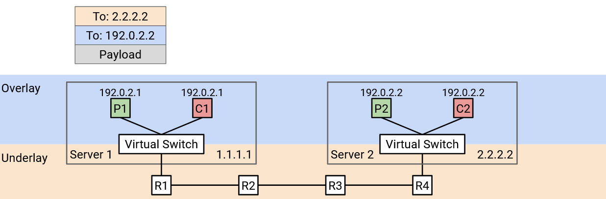Từ góc độ của mỗi tenant, đây không phải là vấn đề. 192.0.2.2 của Pepsi sẽ không bao giờ giao tiếp với 192.0.2.2 của Coke, và cả hai host đều không thể truy cập từ Internet toàn cầu. Tuy nhiên, đây là một vấn đề đối với datacenter. Nếu chúng ta sử dụng destination-based forwarding (chuyển tiếp dựa trên đích), và chúng ta thấy một packet có đích là 192.0.2.2, chúng ta không biết địa chỉ này đang đề cập đến VM nào.
Các IP addresses trùng lặp xảy ra trong thực tế vì hai lý do. Thứ nhất, các datacenters thường không có quyền kiểm soát các địa chỉ mà các tenants đang gán cho các VMs của họ. Thứ hai, trong IP, thông lệ tiêu chuẩn là sử dụng các dải cụ thể cho các private networks, điều này thường dẫn đến các địa chỉ trùng lặp.
Encapsulation cho Multi-Tenancy
Chúng ta có thể sử dụng lại ý tưởng encapsulation để giải quyết vấn đề này. Chúng ta có thể thêm một header mới chứa một virtual network ID (mã định danh mạng ảo) để xác định một tenant cụ thể (ví dụ: Pepsi có ID 1, Coke có ID 2). Header mới này không chứa thông tin để chuyển tiếp và định tuyến, nhưng nó cung cấp thêm ngữ cảnh. Bây giờ, nếu một physical server có các VMs cho nhiều tenants, nó có thể chuyển packet lên đúng mạng ảo.
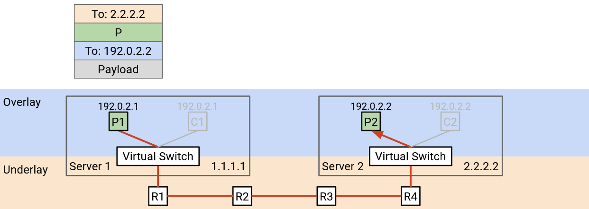 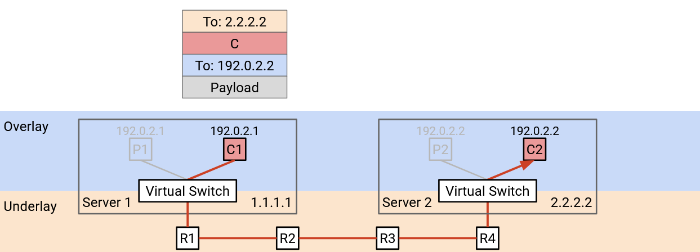Khi một virtual switch nhận được một packet và mở outer header (underlay), nó sẽ nhìn vào header mới của chúng ta để quyết định packet dành cho tenant nào. Sau đó, nó nhìn vào overlay header để chuyển tiếp packet đến một VM cụ thể thuộc về tenant chính xác.
Xếp chồng các Encapsulation
Chúng ta có thể sử dụng ý tưởng encapsulation nhiều lần, thêm nhiều headers mới để hỗ trợ cả virtualization và multi-tenancy.
Để bắt đầu, virtual machine tạo ra một packet TCP/IP tiêu chuẩn, với một đích IP ảo.
Trong bước encapsulation đầu tiên, chúng ta thêm một virtual network header, cho chúng ta biết tenant nào đã gửi packet này. Điều này giúp chúng ta phân biệt hai tenants sử dụng cùng một địa chỉ, và cũng ngăn chặn các packets được gửi đến một tenant khác.
Trong bước encapsulation thứ hai, chúng ta thêm một underlay network header, cho chúng ta biết địa chỉ physical server tương ứng với đích IP ảo.
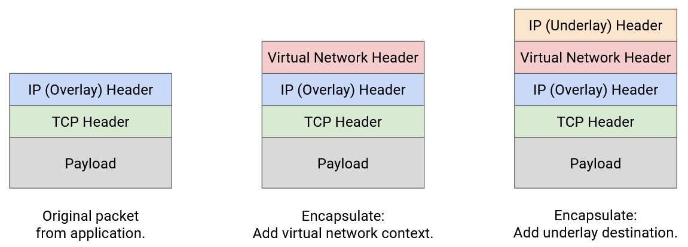Các lớp trừu tượng vẫn giữ nguyên khi chúng ta xếp chồng các encapsulations. Underlay network không cần biết rằng nhiều tenants đang ở trong cùng một datacenter. Underlay network chỉ nhìn vào header ngoài cùng nhất để tìm địa chỉ physical server, và chuyển tiếp packet tương ứng.
Bước decapsulation hoạt động theo thứ tự ngược lại. Virtual switch trên server đích nhận được một packet có hai headers bổ sung.
Trong bước decapsulation đầu tiên, chúng ta loại bỏ outer underlay header. Điều này không còn cần thiết vì packet đã đến physical server đích.
Trong bước decapsulation thứ hai, chúng ta sử dụng virtual network header để quyết định chúng ta nên xem xét tập hợp VMs nào. Physical server có thể có các VMs cho nhiều tenants, và điều này giúp thu hẹp xuống một tenant duy nhất.
Cuối cùng, chúng ta sử dụng IP header trong cùng nhất để gửi packet đến đúng VM trong đúng mạng ảo.
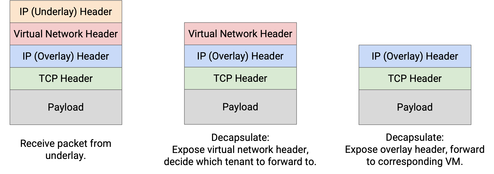Lưu ý: Với encapsulation, chúng ta phải cẩn thận khi đọc 5-tuple (bộ 5 thông tin: IP nguồn, IP đích, cổng nguồn, cổng đích, và giao thức) để load-balancing (cân bằng tải) các packets trên nhiều đường đi. May mắn thay, phần cứng router hiện đại rất giỏi trong việc phân tích các packets để hiểu vị trí của các headers liên quan trong packet, ngay cả khi có thêm các headers được chèn vào.
Trên thực tế, có nhiều giao thức khác nhau tồn tại cho encapsulation. Chúng ta có thể sử dụng IP-in-IP để hỗ trợ hai IP headers (một cho overlay, một cho underlay).
MPLS là một header đơn giản để thêm một nhãn xác định một dịch vụ (ví dụ: một mạng ảo, một tenant). Điều này có thể được sử dụng để thêm encapsulation cho multi-tenancy.
Khi các datacenters trở nên phổ biến hơn, nhiều giao thức khác như GRE, VXLAN, và GENEVE đã được phát triển. Hầu hết chúng hoạt động trên IP, vì vậy các giao thức tùy chỉnh này là inner overlay header, và IP thông thường là outer underlay header.